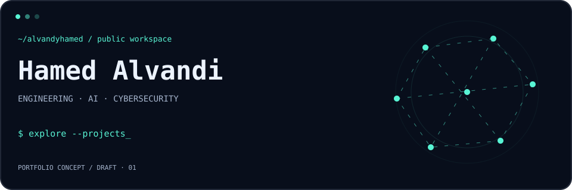
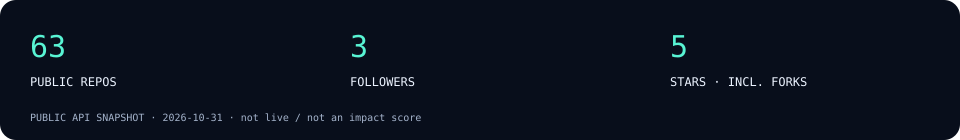

Hamed Alvandi
GitHub ↗ · Public repositories ↗CYBERPUNK TERMINAL × ENGINEERING PORTFOLIO × FUTURISTIC AI
01 / Public workspace
Engineering · AI · Cybersecurity — draft positioning. The public profile bio lists Android, Java, Kotlin, React Native, React and Python. Career and leadership claims await confirmation.
02 / Selected repositories
Public links; no production, impact or sole-authorship claims.
01 / REPOSITORYSubscriptions, traffic, routing and monitoring. Repository description.
PUBLIC · NON-FORK · CASE STUDY DRAFT02 / REPOSITORYTypeScript repository. Proposed dashboard showcase.
PUBLIC · NON-FORK · DESCRIPTION DRAFT03 / REPOSITORYPython repository. Proposed AI experiments slot.
PUBLIC · NON-FORK · DESCRIPTION DRAFT04 / REPOSITORYJalali date picker for React Native.
FORK · CONTRIBUTION SCOPE UNVERIFIED 03 / AI & Automation
Model experiments, OCR exploration and automation — draft focus, no accuracy or deployment claims.
AI / EXPERIMENTSPublic Python repository. Proposed regression experiments case study.
DRAFT · ROLE AND RESULTS PENDINGAI / OCRProposed OCR exploration; inferred from repository name.
DRAFT · SCOPE PENDING 04 / Cybersecurity
Application security, vulnerability analysis and tooling — draft focus, no certification or engagement claims.
SECURITY / APIPublic Go repository. Proposed API security tooling case study.
DRAFT · CAPABILITIES PENDING REVIEWSECURITY / WEBPublic Shell repository. Proposed XSS tooling case study.
DRAFT · CAPABILITIES PENDING REVIEW 05 / Public GitHub snapshot

Snapshot dated 2026-10-31. Counts include forks; these are not impact measures.
06 / Connect
Find me on GitHub ↗